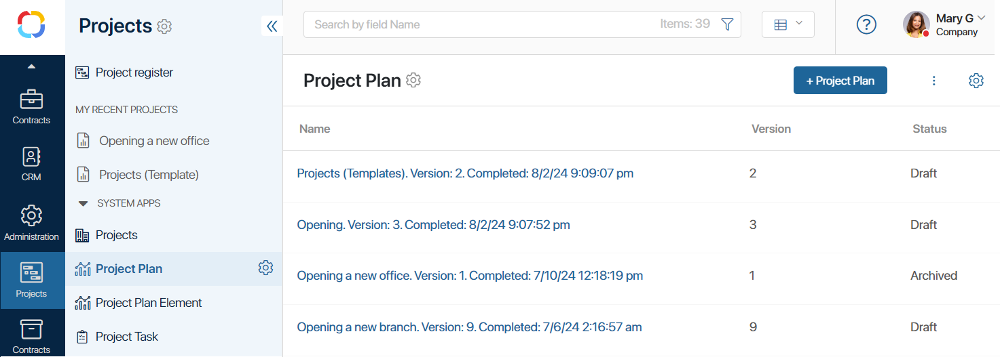
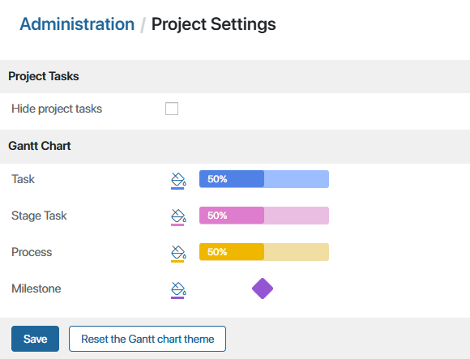

The settings in the Projects workspace are similar to those of any workspace. You can:
- Manage employees’ access to the workspace.
- Create groups, additional apps, and business processes.
- Export the workspace to another company.
To learn more, see Workspace.
начало внимание
Only users included in the Administrators group can manage workspace settings.
конец внимание
Set up the built-in apps
The built-in project apps store all the company’s projects, project plans, and task as app items. By default, these apps are hidden from the left menu of the workspace. You can display:
- Projects. All projects of the standard type created on the Project Register page are stored here.
- Project Plan. This app stores all the versions of created project plans. The system Project plan approval process is linked with it.
- Project Plan Element. This app stores assignments of all types added to project plans.
- Project Task. In this app, assignments of the Task and Milestone types are created and stored after a project plan is published.

Each app has standard settings. You can edit project and project task forms, manage access to data, create business processes, add activity buttons, set up statuses, etc.
Customize forms in built-in apps
You can customize the forms of built-in apps for a better user experience in projects. Project participants see the forms when they open a project page or a project-related task.
начало внимание
Once you have customized and published an app form, it will no longer be automatically updated whenever a new release of the system comes out. Any new widgets that may appear in the future will have to be added manually.
конец внимание
To create a custom form, click on the gear icon next to the name of the app and select Form Settings.
Add a new field to a form
You can create new properties in apps and add them as fields to create, view, and edit forms. Let’s say you are developing a project for another company. In the Projects app, you can create the Client field and add it to the forms. Then this field can be filled in when creating a project. Users will see it when they open the project page. Please note that the added default fields in the app cannot be deleted.
If you want to edit the form of a Task or Milestone type, make changes both in the Project Plan Element and Project Task apps. These apps use the same form templates because project tasks are created automatically based on data from the Project Plan Element app. Please note that in the context of both apps, the Property name and Type of the new fields must match.
Add a widget to a form
Not only can you add fields to a form, you can also edit the template itself, for instance, add widgets and move them around. For example, you have created a business process for approving a project plan. You can place a Button widget on the view form of the Projects app and customize it so that clicking on it launches the process instance. Users will see the widget when they open the project page. You can also customize and add tabs on the project page using the Tabs widget.
To edit a form template, open Form Settings and go to the tab that represents the form that you want to modify: create, view, or edit form. Click on the Default link, and then on the Create Form button. The interface designer opens.
By default, the Widgets of the Projects workspace are used on app forms. In the interface designer, you can delete widgets from forms and add new ones.
Customize sorting fields for items in a project plan
You can set up parameters for sorting tasks in a project plan. To do this:
- Go to the Project Plan Element app and open its form settings.
- Select the required property and enable the Search and sort by field option.
Set up the Projects page and separators
The Projects page has all the standard page settings. You can customize the page by adding new widgets and quick action buttons, manage access, changing its name, and so on. To open the page settings, click on the gear icon next to its name.
Please note, that the workspace contains a hidden Project archive page, which can be displayed.
You can also customize the My Recent Projects separator by clicking the gear icon next to its name: manage its access settings, change its name, or delete it.
Set up statuses in apps
You can monitor the execution of Project Tasks, as well as track the versions of the Project Plan using the preconfigured statuses.
You can also add custom statuses, allow or forbid users to change them manually, track the status change history, etc. To learn more, see Status field.
For information on project statuses, see the Project lifecycle article, and for information on plan statuses, see Project plan.
Set up project task statuses
To track assignments of the Task or Milestone type on the assignment page, enable statuses in app settings:
- Click Set Up in the left menu of the workspace and make the hidden Project Task app visible.
- To the left of the app name, click on the gear icon and select Status Field.
- In the opened window, select the Add Status field checkbox. A list of preconfigured statuses for the app will appear, which you can edit.
Set up business processes
You can set up a business process in any of the built-in apps in the workspace. This allows you to apply the workflows that your company uses.
For example, you can use a ready-made process for project plan approval or create a custom process in the Project Plan app. Read more in the Configure plan approval article.
To configure the project lifecycle, as well as to archive and resume work with the project, use ready-made processes associated with the Projects app. If you are setting up custom processes for changing project statuses, associate them with the Projects app.
Please note that you shouldn’t simply delete a finished project from the Projects app. The project plan status will stay the same, all tasks will also remain active, and their statuses won’t change. This is because project plans and tasks are items of other apps.
Project settings
In the Administration > Project Settings workspace, you can:
- Hide project tasks in the Tasks workspace.
- Change tasks’ color in the project plan.

In the Tasks workspace, the Project tasks group is displayed by default. You can hide it for all users if most of them do not work with this type of task. To do this, enable the Hide project tasks option. Additionally, any employee can enable the display of project tasks in the Tasks workspace using personal settings in their user profile.
You can also change the segment color for each task type in the project plan. To do this, click the icon to the right of the task type to open the palette and change the segment color. After making changes, save the settings.
If you want to reset the color scheme to default, click Reset the Gantt chart theme and save the changes.